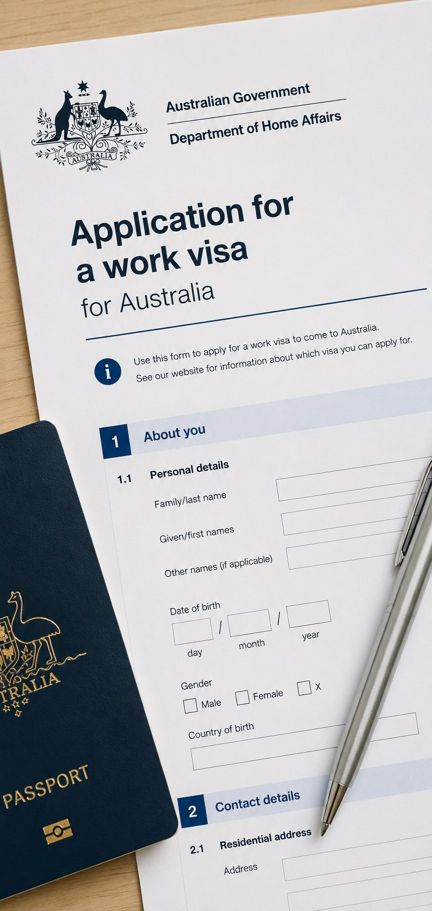

Immigration
& visas
The most factual chapter. There’s no single right visa, the route depends on your profession, your employer and your plans.
 Kettle on. A longer read — about 14 min
Kettle on. A longer read — about 14 min
Three things you can do right now
Pick the one you need now. The full guide is underneath for when you have a cup of tea and half an hour.
Price up the move
Visa fees, flights, shipping and the first month here, worked out for your household rather than a generic average.
Open the cost calculator I want the official immigration linksGet the official links
Home Affairs, the skilled occupation lists and the forms you’ll need, gathered in one place.
Open the directory I want someone to sequence it with meTalk it through
We explain the routes and keep your file moving. The decisions stay with Home Affairs, but you won’t be guessing at the order.
Ask us about your visaTwo main ways in, and how they meet registration
Reviewed July 2026 · checked against the Department of Home Affairs’ current published guidance. Immigration rules change, always confirm at the source
Two routes cover most healthcare professionals: employer-sponsored, where a provider sponsors you for a specific role, or skilled migration, based on your points and occupation. Registration and visa are separate workstreams, and the trick is sequencing them so neither holds the other up.
A note up front: immigration is regulated, and the rules change. Nothing here is migration advice, it’s a plain-English map so you know the shape of it. For your actual application, the Department of Home Affairs publishes the current detail in full, and we point you to it.
Three threads, one timeline
Registration, the role and the visa aren’t a strict queue. They run alongside each other, and the skill is in starting each one early enough that none of them becomes the thing everyone is waiting on.
Registration to practise
Your right to practise comes from the national board for your profession, or from the accrediting body where your profession isn’t board-registered. It’s the longest lead time of the three, so it starts first.
The role and the sponsor
An offer from an employer willing to sponsor is what unlocks the most direct visa routes. It also anchors the timing of everything else, including when you can realistically fly.
The visa itself
Lodged once the role and your evidence are in place. Health examinations and police certificates sit inside this thread and are the two things people most often start too late.
Employer-sponsored
An Australian employer sponsors you to fill a role they can’t fill locally. For most candidates we support, this is the most direct path, and on it, a separate migration skills assessment generally isn’t required just to register.
The working visa
A temporary skilled visa sponsored by your employer for an eligible occupation. It lets you live and work here while you settle, often with a pathway to permanent residence over time.
Toward permanence
An employer-nominated permanent route for eligible roles, sometimes available from the outset, sometimes after a period on a working visa. Your adviser will confirm what fits.
A role and a runway
You arrive with a job, an employer invested in your move, and often relocation support, which makes the practical side of settling considerably smoother.
Skilled migration
Skilled migration lets you apply based on your occupation, age, English, qualifications and experience, without needing a specific employer first. It’s where the migration skills assessment matters most.
The points-tested visas
Subclasses such as 189 (independent), 190 (state-nominated) and 491 (regional) are scored on a points test. State and regional nomination can add points and open doors.
The skills assessment
These visas require a skills assessment by the gazetted authority for your profession: ASMIRT for radiographers and radiation therapists, ANZSNM for nuclear medicine, the ASMIRT ultrasound certificate for sonographers.
Regional incentives
Many healthcare roles are outside the big cities, and regional visas and incentives can make a regional move both easier and rewarding, something worth exploring openly.
Which route is likely yours
Nobody can tell you your visa from a web page, and we won’t pretend otherwise. But most people recognise themselves in one of these two columns before they ever speak to an adviser.
Employer-sponsored usually fits if…
- You want a role confirmed before you commit to moving
- Your profession is one hospitals and providers are actively short of
- You’d rather arrive with an employer invested in your relocation
- You want the shortest sensible route from decision to arrival
- You’re moving with a partner and children and want certainty first
Skilled migration may suit if…
- You want permanent residence from the outset, before choosing an employer
- You’re happy to complete a migration skills assessment for your occupation
- You score well on the points test on age, English and experience
- You’re open to a state-nominated or regional route, and the incentives that come with it
- Your timeline is longer and you’d rather trade speed for flexibility
Both can be true. Plenty of people arrive on an employer-sponsored visa and move toward permanent residence later, either through their employer or in their own right. Starting on one route rarely closes the other.
How the process usually unfolds
Every case differs, and timelines move. But the path from first conversation to first shift almost always follows this shape, and seeing it written down takes most of the fear out of it.
Confirm you’re eligible
Before anything else, a clear look at your qualifications, experience and English against what your profession requires. This is Stage 03, and it saves months of wasted effort.
Start registration
The longest thread begins. Document gathering, verification and assessment run in the background while the rest of your move takes shape.
Secure the role
Interviews, offer, and confirmation that the employer will sponsor. This is the point where an abstract plan becomes a real date on a calendar.
Nomination, then visa
On a sponsored route your employer’s nomination is generally lodged alongside or just ahead of your visa application. On a skilled route you submit an expression of interest and wait to be invited.
Health and character checks
Health examinations for everyone on the application, plus police certificates from each country you’ve lived in. Start these the moment you’re told to; overseas certificates can be slow.
Grant, then the practical move
Once granted, flights, shipping, schools and housing come into focus. That’s where Preparing to move picks up, and by then the hardest part is behind you.
Bringing your family
For most work and skilled visas you can include your partner and dependent children on the same application, and partners are usually able to work.
The detail (who counts as a dependant, evidence of your relationship, schooling and health checks) depends on the visa and your circumstances. It’s all routine, but it rewards getting organised early: gathering documents, booking the health examinations, and being clear about everyone you’re bringing. We’ll make sure nothing important is left to the last minute, and Home Affairs confirms the specifics.
Your partner can usually work
Partners included on most work and skilled visas hold work rights, often unrestricted. For a lot of couples that’s the detail that makes the move viable: two careers, not one on hold.
Your children can go to school
Dependent children study here while you work. What you pay depends on your visa and the state or territory you land in, so it’s worth checking before you choose a suburb.
Healthcare from the start
Access to Medicare depends on your visa, and reciprocal health care agreements cover people from a number of countries in the meantime. Most families also hold private cover, and some visas require it.
Toward permanent residence
Most people we speak to aren’t really asking about a visa. They’re asking whether this could become home. It’s a fair question to ask on day one, and worth answering honestly.
After a period in the role
Employer-nominated permanent routes are generally open to people who’ve held an eligible role for a qualifying period, and sometimes from the outset. Your employer and your adviser confirm what applies.
Points-tested residence
If you meet the points test you can pursue permanent residence independently of any employer, including through state nomination. Some people arrive sponsored and go this way later.
Citizenship
Citizenship follows a period of lawful residence, part of it as a permanent resident. It’s years away rather than months, but it’s the reason many families make the move at all.
Worth saying plainly: permanence is not automatic, and eligibility rules change over time. If putting down roots is the point of the move for you, say so early. It changes which route we’d recommend exploring, and which questions your adviser should be asked first.
What’s worth knowing before you apply
None of these are reasons to hesitate. They’re the things that keep an application on track rather than catching you out halfway through.
The rules change
Visa subclasses, occupation lists, income thresholds and nomination criteria are all reviewed. Whatever you read, including this page, confirm the current position with the Department of Home Affairs.
Health and police checks take time
Medicals for every person on the application, and police certificates from every country you’ve lived in for a meaningful period. Overseas certificates are the single most common cause of delay.
There are real costs
Application charges, medicals, certificates, skills assessments and registration fees add up across a family, and some are payable per person. They’re manageable when you budget for them and unpleasant when you don’t.
English evidence has a shelf life
Test results expire, and different bodies accept different tests and scores. Check what your registration and your visa each require before you book, rather than sitting the wrong test twice.
Registration and visa are separate
Approval for one is not approval for the other. Both have to land, and they’re assessed by different organisations against different criteria.
Nobody here gives migration advice
We coordinate, we chase, we keep the threads aligned. Visa agents can be expensive and are not always necessary: if you have the time to work through the process yourself, many people do, and it can save a good deal of money.
What to start gathering now
You can make a real dent in this before you’ve chosen a visa, an employer or even a state. Everything below gets used more than once, so getting certified copies together early pays off repeatedly.
Almost certainly needed
- Current passports for everyone moving, with plenty of validity left
- Degree certificates and academic transcripts
- A full employment history with dates, and references you can reach
- Evidence of registration, past and present, in every country you’ve practised
- English test results, if your route requires them
- Police certificates from each country you’ve lived in
Depending on your circumstances
- Marriage or relationship evidence, and children’s birth certificates
- A migration skills assessment from the authority for your occupation
- Continuing professional development records
- Certified translations of anything not in English
- A change-of-name document, if your paperwork doesn’t all match

Visas are the part people fear most, and almost always needlessly. The honest truth is that once you have a role and your registration is moving, the visa is a process, paperwork, timelines and patience, not a gamble. We coordinate the three threads (job, registration, visa) so they line up. You don’t have to become an expert in any of it; you just have to start in the right order.
SophieCEO & Founder, Ethicare Resourcing
The things people ask us first
Which visa is right for me?
It depends on your profession, whether you have an employer, your age and your plans. Most candidates we support come on an employer-sponsored visa; others suit skilled migration. We’ll talk through which fits, and Home Affairs sets out each route in full.
Do I need the skills assessment and registration?
Not always both. Registration is what lets you practise and is generally the priority. A migration skills assessment is needed for certain skilled visas, but on an employer-sponsored route it often isn’t required just to register. We’ll confirm what your pathway needs.
Can my partner work?
In most cases, yes. Partners on employer-sponsored and skilled visas are usually able to work, frequently with full rights. The specifics depend on the visa, which your adviser confirms.
How long does a visa take?
It varies by visa type, your documentation and current processing times. The biggest things within your control are starting early and submitting complete, well-evidenced applications, for the visa, the skills assessment and your registration alike.
Do I need a job offer before I can apply?
For employer-sponsored routes, yes, that’s the point of them. For points-tested skilled visas, no, you can apply in your own right. Which is why the first useful conversation is about what you want, not which form to fill in.
Will I have to move somewhere regional?
Not necessarily, though it’s worth keeping an open mind. A lot of healthcare roles sit outside the largest cities, regional routes can carry extra points and incentives, and plenty of people who arrived intending to move on ended up staying. We’ll be straight with you about what the trade-offs feel like day to day.
Can I bring our pets?
Usually, yes, and it’s a genuine process rather than an afterthought: vaccinations, testing, an import permit and quarantine on arrival, all with lead times measured in months. Start it as soon as your move looks real. Preparing to move covers the practical side.
What if my application is refused?
It’s uncommon on well-prepared applications, which is precisely why preparation matters. Where it happens there are usually options, review rights or a different route, and the decision letter explains them. We’ll help you work out what it means for your move.
Do you charge candidates for any of this?
No. Our support for you is free, employers pay us to find the right people. Third parties charge their own fees, registration bodies and assessment authorities, and we’ll always tell you which costs are coming before they arrive.
Read a little deeper
Unsure which visa fits?
Tell us your profession and your plans, and we’ll map the likely route then coordinate the job, registration and visa so it all lines up.
Ethicare Resourcing · your guide to a life and career in Australia. Visa information here is general; the Department of Home Affairs publishes the current rules.